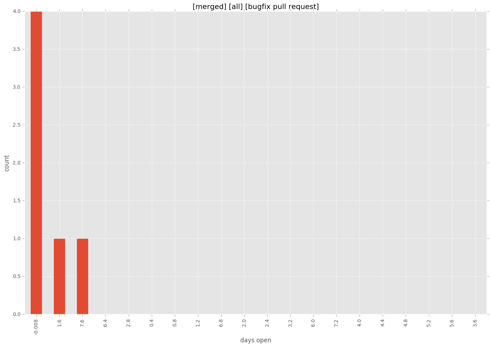
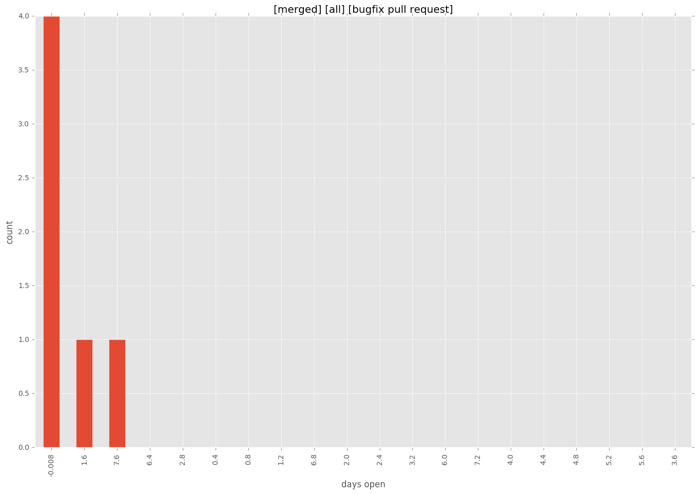

total issue counts
bugfix pull request: 11
feature pull request: 2
pullrequest: 15
docs pull request: 1
new plugin: 1
issue history
days open by issue type
feature pull request
count: 4
std: 2.30940107676
min: 6
max: 10
median: 8.0
mean: 8.0
all
count: 24
std: 28.0540045967
min: 0
max: 101
median: 0.0
mean: 10.625
pullrequest
count: 0
std: nan
min: nan
max: nan
median: nan
mean: nan
docs pull request
count: 2
std: 0.0
min: 101
max: 101
median: 101.0
mean: 101.0
bugfix pull request
count: 17
std: 2.63461125607
min: 0
max: 8
median: 0.0
mean: 1.23529411765
new plugin
count: 1
std: nan
min: 0
max: 0
median: 0.0
mean: 0.0
closures grouped by total days open


 
